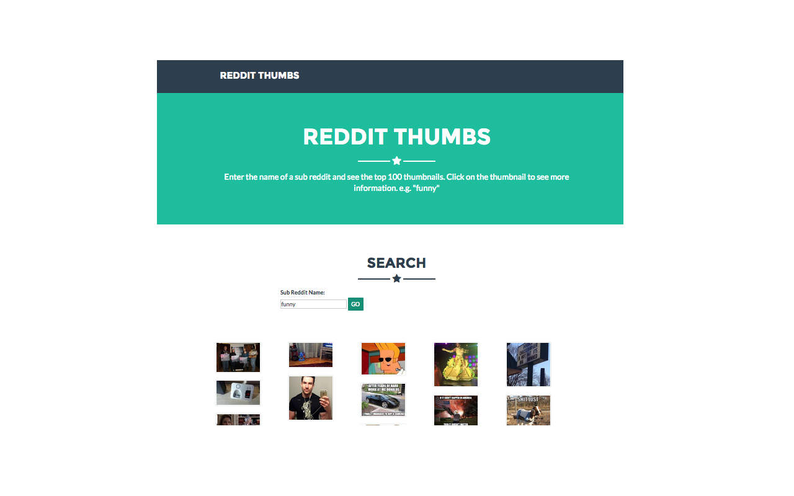
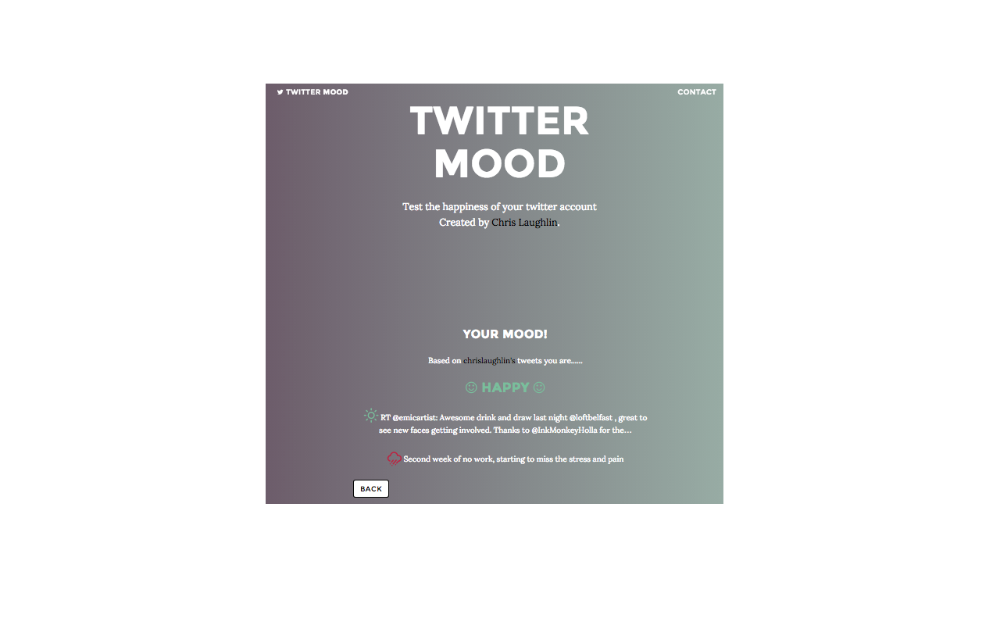

Full Stack Senior Software engineer with a strong interest in JavaScript application development, automation and testing. With a passion for object oriented well-structured quality code driven by BDD and TDD. I have a strong focus on JavaScript development with experience in Angular JS, Node JS, React JS and jQuery, BackboneJS. I regularly blog about the technology I use.
Check out my blog here
First application built using Backbone JS, calls to reddit for the top 100 posts for a givn sub reddit and displays a grid with the thumbnail from the post. Uses Backbone Model for showing more information on the post.
Web application that lets you see what mood you twitter status have been. Happy or sad youll see what mood you have been in when posting to Twitter.
Small mobile web app for managing weekly budgets. Built with Angular JS
JavaScript queue processor, to produce a "multi threaded" defered processor. Create a queue and give it a function that will carry out thr processing. Push items into the queue and the queue will process them using setInterval.